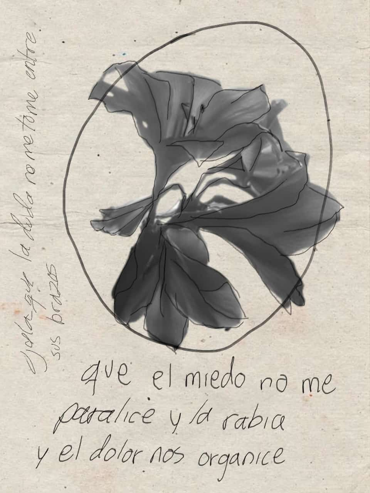

BIOGRAFÍA
Ecofeminista, desarrolladora de videojuegos, artista 2D y 3D, y fotógrafa. Se encuentra actualmente cursando la carrera de Artes y Comunicaciones Digitales. Cuenta con estudios complementarios sobre género y prevención de abuso infantil.
Expuso en la primera edición de "SOY MUJER LATINOAMERICANA" en 2024, una exposición de fotografía que celebra la visión y creatividad de las mujeres latinoamericanas.
Ha sido ponente en conferencias sobre mujeres en los videojuegos y la humanización de la tecnología. Fungió como consejera y colegiada académica.

